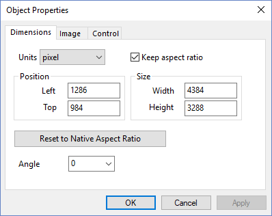
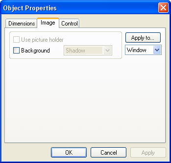
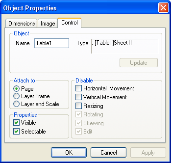

Referenz: Der Dialog Objekteigenschaften (Bildobjekte)
ImageOb-Prop-Dialog
Um das zur Spalte zugehörige Dialogfeld Objekteigenschaften zu öffnen:
- Wählen Sie eine Tabelle in dem Diagramm aus. Klicken Sie mit der rechten Maustaste und wählen Sie Programmablauf im Kontextmenü.
Die Registerkarte Dimension
- 
Einheiten
Legt die Einheiten für Position und Größe fest (siehe unten).
Schritt beibehalten
Aktivieren Sie dieses Kästchen, um nur proportionale Größenbestimmung zuzulassen.
Die Gruppe Position
Bestimmen Sie die Linkte und Obere Position für die Tabelle. Die Einheiten werden mit der Auswahlliste Einheiten festgelegt.
Die Gruppe Größe
Legen Sie die Breite und Höhe in durch die Auswahlliste Einheiten bestimmten Einheiten fest.
Auf ursprüngliches Seitenverhältnis zurücksetzen
Klicken Sie auf diese Schaltflächen, um das Verhältnis von Breite und Höhe auf das ursprüngliche Seitenverhältnis zurückzusetzen.
Winkel
Nur für SVG-Diagrammobjekte verfügbar. Wählen Sie oder geben Sie einen Winkelgrad ein, um das SVG-Diagrammobjekt zu drehen.
Die Registerkarte Bild
- 
Die Gruppe Bild
Platzhalter verwenden ist für Tabellenobjekte nicht verfügbar.
Um einen Hintergrund für die ausgewählte Tabelle hinzuzufügen, aktivieren Sie das Kästchen Hintergrund und wählen Sie eine gewünschte Option aus der Auswahlliste. Deaktivieren Sie dieses Kästchen, um die Tabelle ohne einen Hintergrund anzuzeigen.
Anwenden auf
Um die Einstellungen in der Registerkarte Bild anzuwenden:
- Treffen Sie eine Auswahl in der Auswahlliste unter der Schaltfläche Anwenden auf, um den Bereich festzulegen, auf den die Einstellungen angewendet werden. Wählen Sie beispielsweise Objekt, um die Hintergrundeinstellungen nur auf die ausgewählte Tabelle anzuwenden.
- Klicken Sie auf die Schaltfläche Anwenden auf.
Die Registerkarte Kontrollelement
- 
Die Gruppe Objekt
Das Eingabefeld Name zeigt den aktuellen Namen des Objekts an. Origin benennt Objekte, indem zuerst ein Standardbasisname (zum Beispiel Tabelle) verwendet und dann der Name inkrementiert wird. Sie können den Namen bearbeiten. Der Objektname kann im LabTalk-Skript verwendet werden, um das Objekt programmatisch zu steuern.
Das Feld Typ zeigt den Objekttyp an. Es kann nur gelesen werden.
Die Schaltfläche Update ist nur für Worksheet-Objekte verfügbar, die zu einem Layout hinzugefügt wurden. Klicken Sie auf diese Schaltfläche, um die Tabelle in der Layout-Seite zu aktualisieren, damit die letzten Änderungen im Quell-Arbeitsblatt wiedergegeben werden.
Die Gruppe Anhängen an
Um die Wirkung der Layermanipulation und der Achsenneuskalierung auf Größe und Position des Objekts zu steuern, wählen Sie eine der folgenden Optionen:
- Seite: Wenn es mit der Seite verbunden ist, sind Position und Skalierung des Objekts unabhängig von seinem Layer. Die Objektposition und -größe werden nicht durch Verschieben oder Verändern der Layergröße oder Ändern der Achsenskalierung beeinträchtigt. Das Objekt ist jedoch noch immer ein Teil des Layers und wird gelöscht, wenn der Layer gelöscht wird.
- Layer Rahmen: Wenn es mit dem Rahmen des Layers verbunden ist, ist die Position des Objekts abhängig von seinem Layer. Wenn Sie das Layer verschieben, verschiebt sich das Objekt mit dem Layer. Wenn Sie die Größe des Layers ändern, ändert das Objekt die Dimensionen proportional und verschiebt den Layer. Wenn Sie die Achsen neu skalieren, verändert das Objekt Größe und Position jedoch nicht.
- Layer und Skala: Wenn das Objekt mit dem Layer und den Skalierungen verbunden ist, ist es im Bezug auf Größe und Position mit dem Layer gekoppelt. Wenn Sie den Layer bewegen, verschiebt sich das Objekt mit dem Layer. Wenn Sie die Größe des Layers ändern, ändert das Objekt die Dimensionen proportional und verschiebt den Layer. Wenn Sie die Achsen neu skalieren, ändert sich die Objektgröße nicht, aber das Objekt verschiebt sich, so dass es die gleichen XY-Koordinatenwerte behält.
Die Gruppe Eigenschaften
- Sichtbar: Wenn dieses Kontrollkästchen aktiviert ist, ist das Objekt sicht- und auswählbar. Wenn dieses Kontrollkästchen deaktiviert ist, ist das Objekt nicht sicht- und auswählbar. Um das Objekt anzuzeigen und zu bearbeiten, öffnen Sie den Modus Schaltflächen bearbeiten, indem Sie Bearbeiten: Schaltflächen bearbeiten auswählen. Verlassen Sie den Modus Schaltflächen bearbeiten, indem Sie erneut auf Bearbeiten: Schaltflächen bearbeiten klicken.
- Auswählbar: Wenn dieses Kontrollkästchen aktiviert ist, kann das Objekt ausgewählt (und bearbeitet) werden. Wenn das Kontrollkästchen deaktiviert ist, kann das Objekt nicht bearbeitet werden. Um das Objekt zu bearbeiten, öffnen Sie den Modus Schaltflächen bearbeiten, indem Sie Bearbeiten: Schaltflächen bearbeiten auswählen. Verlassen Sie den Modus Schaltflächen bearbeiten, indem Sie erneut auf Bearbeiten: Schaltflächen bearbeiten klicken.
Die Gruppe Abschalten
Diese Gruppe steuert das Verhalten des Objekts, während es sein Muster und seine Position ändert.
- Horizontale Bewegung: Aktivieren Sie dieses Kästchen, um die horizontale Verschiebung zu verhindern.
- Vertikale Bewegung: Aktivieren Sie dieses Kästchen, um die horizontale Verschiebung zu verhindern.
- Größe ändern: Aktivieren Sie diese Kästchen, um die Änderung der Größe zu verhindern.
- Drehung: Dieses Kästchen ist für Tabellenobjekte nicht verfügbar.
- Verzerrung: Dieses Kästchen ist für Tabellenobjekte nicht verfügbar.
- Bearbeiten: Dieses Kästchen ist für Tabellenobjekte nicht verfügbar.